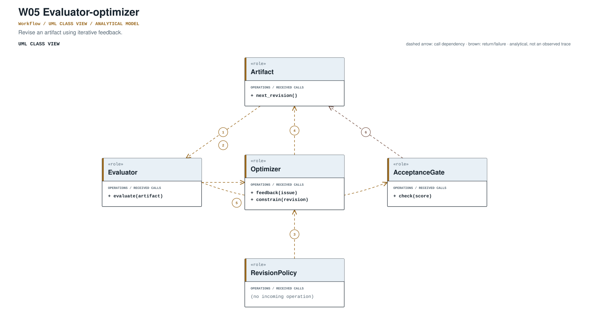
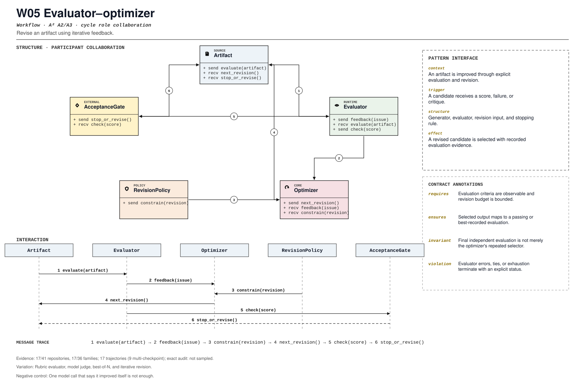

PROMPT SKETCH
Generate candidates, evaluate them against declared criteria, and revise only within the revision budget. Select the passing candidate or the best recorded one, with its evaluation attached.Revise an artifact using iterative feedback.
generate_evaluate_reviseRECORD STATUSCandidate · v0.1.0The proposed contract drawn as participant roles, received calls, and numbered dependencies.

The same roles and calls as a class collaboration and a numbered message sequence.

Where the mechanism applies. All four dimensions belong to the proposed match, not just its vocabulary.
The obligation that clients, operators, and auditors should be able to rely on.
One model call that says it improved itself is not enough.
The hot spot is admitted only where the protected semantics survive.
Rubric evaluator, model judge, best-of-N, and iterative revision.
Test improvement, stagnation, evaluator exception, and held-out evaluation.
Did evaluation separate from generation and gain stopping rules?
An illustrative prompt and a small design sketch for the proposed contract. Names and APIs are invented; this is not a repository excerpt.
Generate candidates, evaluate them against declared criteria, and revise only within the revision budget. Select the passing candidate or the best recorded one, with its evaluation attached.def optimize(task, generator, evaluator, budget):
best = None
for revision in range(budget):
candidate = generator.generate(task, feedback=best.feedback if best else None)
score = evaluator.evaluate(candidate, task.criteria)
best = Candidate(candidate, score, revision)
if score.passed:
break
return Selection(best, criteria=task.criteria, revisions=revision + 1)Illustrative design sketch. The selected output must map to an evaluation record, not an unstated preference. This example is a teaching aid, not implementation evidence or a conformance claim.
The frozen rule that retrieves this record, the canonical source exemplar, and the control that should stay unmatched.
generate_evaluate_revise(?i)\b(?:evaluator[_-]?optimizer|optimizer|evaluation[_-]?feedback|revision[_-]?loop)\bFrozen expression, v0.1.0. A match is a retrieval cue, not a confirmed implementation.examples/agent_patterns/llm_as_a_judge.py:47Support: examples/agent_patterns/README.md:1Up to five public files retrieved by the frozen cue and pinned to the audited commit. A match is a place to inspect, not a confirmed implementation.
examples/agent_patterns/llm_as_a_judge.py:47CANONICAL SOURCE02affaan-m/ECCskills/manim-video/assets/network_graph_scene.py:6RETRIEVAL CUE03browser-use/browser-usebrowser_use/llm/mistral/schema.py:1RETRIEVAL CUE04bytedance/deer-flowbackend/app/gateway/routers/input_polish.py:41RETRIEVAL CUE05crewAIInc/crewAIlib/crewai/src/crewai/rag/qdrant/client.py:80RETRIEVAL CUEEach layer answers a different question. Do not substitute retrieval for review.
A concrete source anchor is available for this proposed record. It is one exemplar, not evidence that all repositories—or every contract field—conform.
Review boundary: this candidate and its specification come from an AI-assisted study. Independent human validation remains open.
47.2% of repository families in the frozen panel have at least one current cue, historical cue, or canonical source layer. This is not confirmed prevalence.
Current lexical-cue repositories: 17 / 4186bd29878b30examples/agent_patterns/llm_as_a_judge.py:47examples/agent_patterns/README.md:1Generator-evaluator loop revises until pass.
(?i)\b(?:evaluator[_-]?optimizer|optimizer|evaluation[_-]?feedback|revision[_-]?loop)\bThis expression is a discovery instrument only. A match is a retrieval cue—not a confirmed implementation, pointcut match, or contract proof.